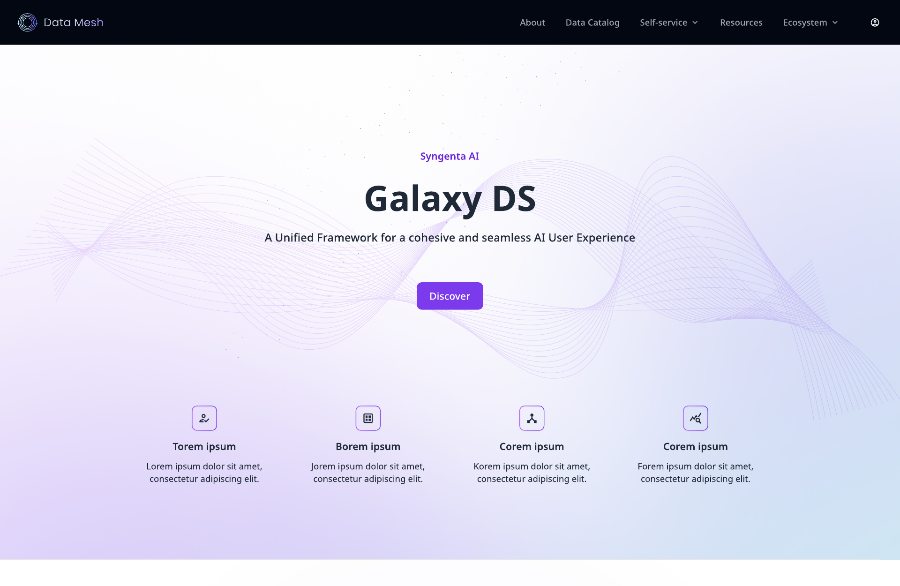
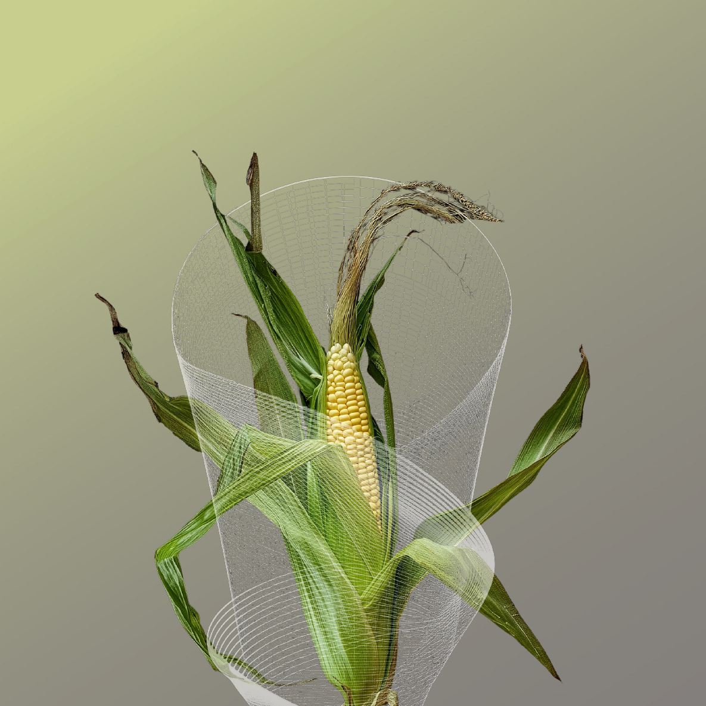
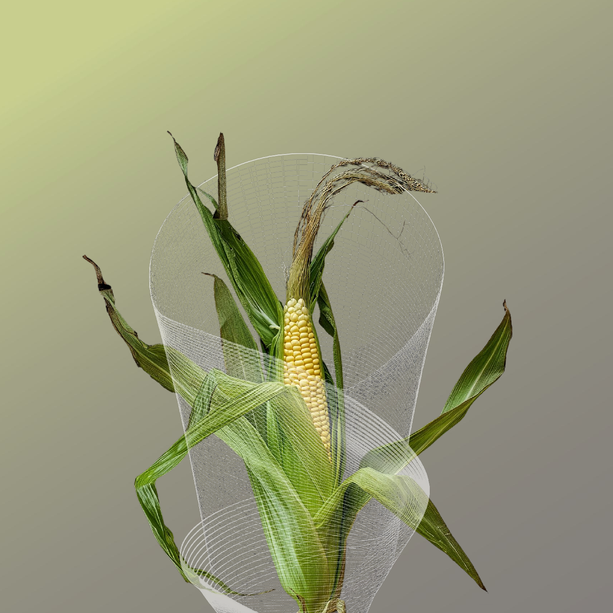

← home / motion_lab
This hero: Scramble Text on the title · Blinking Squares canvas behind it · Shiny Pill sheen on this line · blur-out on scroll
Text
Each effect below is a from-scratch re-implementation of an OriginKit component, stripped to what fits an editorial portfolio. Hover, scroll and resize to exercise them. Anything can be switched on with data-motion="name" or off for a whole subtree with data-motion="off".
Endless sheen sweep
Images



Surfaces
Buttons
Backdrop
Aurora drift — three soft radial glows drift behind every page on a 34-second loop (CSS-only, so the homepage has it too).
Blinking Squares — the hero grid twinkles at 30fps, thins out toward the bottom, brightens in a halo around the cursor, and pauses when scrolled away or when the tab is hidden. Canvas resolution is capped at 1.5× so it stays cheap on high-DPI handhelds.
Scroll hint — a pulse travels down the hero's hairline instead of a static gradient.